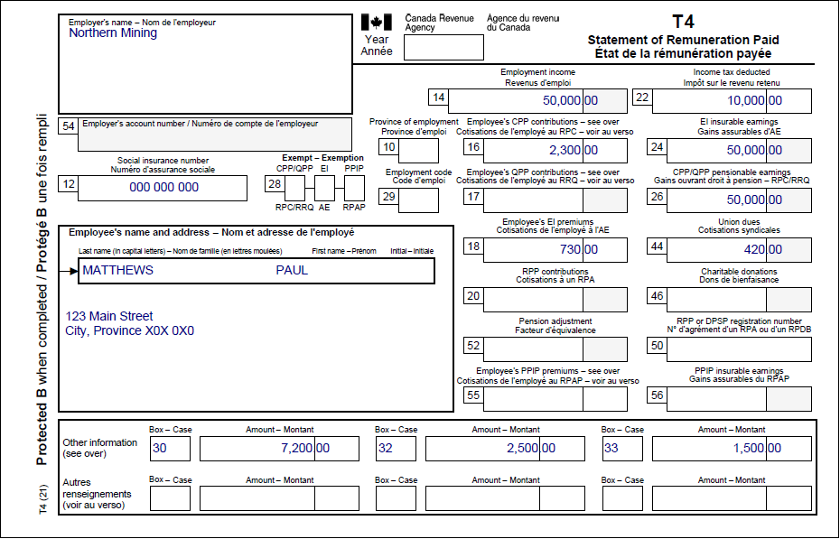

Reporting pension income splittingClaiming the travel deduction
Pre-test question
Sorry, that is incorrect.
It is not necessary to claim the basic residency amount to be eligible to claim the travel benefits.
That is correct.
It is not necessary to claim the basic residency amount to be eligible to claim the travel benefits.
Instructions
- Open the tax software
- Review the Background information and Required slips (tax slips, receipts, etc.)
- Provide all required information for the appropriate sections of the tax software
- Once completed, compare your results with the solution provided
- Afterwards, refer to the Takeaway points
Background information
Situation
Paul has permanently lived in a Zone A – Prescribed Northern Zone since June 30, 2022. He is eligible to claim 184 days for the basic residency amount and the additional residency amount. Paul received the following taxable amounts from his employer:
- board and lodging allowance: $7,200 (box 30 of the T4 slip)
- travel assistance in a prescribed zone: $1,000 (total taxable travel benefits from box 32 of the T4 slip, minus any amount received for medical travel from box 33 of the T4 slip)
- medical travel assistance: $1,500 (box 33 of the T4 slip)
Paul has provided you with both the lowest quoted cost for each trip’s return airfare (using the designated city list found on form T2222) as well as the actual cost of each trip:
- quote for the trip for medical travel: $1,500
- actual cost of the trip for medical travel: $1,780
- quote for the trip for other reasons: $1,000
- actual cost of the trip for other reasons: $1,250
Paul chooses to claim the employer paid travel benefits instead of the standard amount ($1,200 total for all trips in the year, under proposed changes) as it is more beneficial for him.
Individuals may choose either the standard rate for all trips or the employer paid benefits for all trips, but not both.
Identification information
| Name | Paul Matthews |
|---|---|
| Social insurance number (SIN) | 000 000 000 |
| Address | 123 Main Street City, Province X0X 0X0 |
| Date of birth | January 9, 1986 |
| Date of entry into Canada | August 25, 1997 |
| Marital status | Single |
Required slips
T4 – Statement of Remuneration Paid (Pierre) (Lumber Inc.)
Text version of the T4 slip
T4 – Statement of Remuneration Paid
Protected B
Employer’s name: Northern Mining
Employee’s name and address:
Last name: Matthews
First name: Paul
123 Main Street
City, Province X0X 0X0
Box 12: Social insurance number: 000 000 000
Box 14: Employment income – line 10100: 50,000.00
Box 16: Employee’s CPP contributions – line 30800: 2,300.00
Box 18: Employee’s EI premiums – line 31200: 730.00
Box 22: Income tax deducted – line 43700: 10,000.00
Box 24: EI insurable earnings: 50,000.00
Box 26: CPP/QPP pensionable earnings: 50,000.00
Box 44: Union dues – line 21200: 420.00
Other information:
Box 30: 7,200.00
Box 32: 2,500.00
Box 33: 1,500.00
Review your results
Solutions will be available in February 2023 as printable PDF.
Takeaway points
Steps to follow
- Review their background information and required slips
- In Interview setup, tick the box next to Other deductions and credits (including school supply and home buyers’ amount) in the Other topics section, then click the + sign next to Federal line 25500 – T222 – Northern residents deduction
- Select Zone A (Resident of prescribed northern area) from the Area for which you are claiming the northern residents deduction drop-down menu
- Enter the start and end dates of the northern residence into the Basic residency amount, beginning and Basic residency amount, end fields and enter 184 into the Number of days to consider for the additional residency amount field
- Select Zone A (Resident of prescribed northern area) from the Northern area where you travelled drop-down menu, then select Other from the Purpose of the trip to a northern area drop-down menu, and enter Paul Matthews into the Name of the person who travelled to or from the northern destination field
- Enter the following amounts:
- $1,000 into the 1 – Employee benefits with respect to northern travel field
- $1,250 into the 2 – Northern travel expenses, field under the Plane heading
- $1,000 into the 3 – Lowest return air fare for the northern area travel field
- To add the medical trip, click Add Another and provide the following information:
- select Zone A (Resident of prescribed northern area) from the Northern area where you travelled drop-down menu
- select Medical reasons from the Purpose of the trip to a northern area drop-down menu
- enter Paul Matthews into the Name of the person who travelled to or from the northern destination field
- Enter the following amounts:
- $1,500 into the 1 – Employee benefits with respect to northern travel field
- $1,780 into the 2 – Northern travel expenses field under the Plane heading
- $1,500 into the 3 – Lowest return air fare for the northern area travel field
For more information refer to UFile instructions.